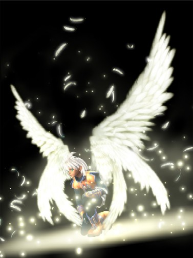

Forums galactiques > Taverne galactique : lieu de discussion informel > Appel au secours d'un nouveau venu
| Kror Réputation à la taverne : 0  10/02 ETU 17:22 | Score : 0 Détails é la levrett ce remit an position acise..
| ||
| Capitaine Bloten Réputation à la taverne : 70  10/02 ETU 17:22 | Score : 0 Détails on n'a pas dit qu'on allait t'attaquer, mais ça te tuerai pas de partager ton natal et de d'étendre ailleur.
| ||
| Eriol Réputation à la taverne : 190  10/02 ETU 17:23 | Score : 0 Détails Mais ne pas le faire ... par contre
| ||
| Angel Chaos Réputation à la taverne : -21  10/02 ETU 17:23 | Score : 0 Détails Désole mais je doit y aller^^
Angel Chaos | ||
| tyrus Réputation à la taverne : -19  10/02 ETU 17:24 | Score : 0 Détails ouai et ci tu le fais pas c'est moi qui vai venir partagé ton systeme avec Cesco Imperator
| ||
| Capitaine Bloten Réputation à la taverne : 70 10/02 ETU 17:25 | Score : 0 Détails J'ai une question :
c'est si dur de se retenir de tapper sur son voisin? | ||
| Kror Réputation à la taverne : 0 10/02 ETU 17:25 | Score : 0 Détails é rest en pozition, tu va avoir du travail d'ici samen sou'pe
HRP: le pb ne se pose pas, commencé il y a deux jours, hyperfusion, ils n'ont pas encore (donc syst fermé) mais c'est vrai que coloniser tout un syst en moins de deux jours alors qu'on est jeune puceau de cette Galaxie, ça me laisse rêveur.. | ||
| Cesco Imperator Réputation à la taverne : 3122  10/02 ETU 17:40  | Score : 0 Détails "Cesco Imperator se redressa brusquement de son fauteuil le teint empourpré de rage, dans un calme à peine retrouvé il pris la parole en prenant à partie tout l'assemblée après avoir regardé dans les yeux son agresseur"
Commandantes et commandants ! Je me vois dans l'obligation de révéler le vrai visage de Angel chaos qui viens d'apporter un argument ourageusement fallacieux!! Ce soi-disant jeune commandant qui a besoin de ma planète natal pour sa survie dispose dans mon système (à 20 planètes comme tout le monde) de 16 planètes!! Faible ne trouvez-vous pas ??!!! Alors je ne vois vraiment pas comment lui faire entendre raison... et le faire revenir vers des intentions plus civilisées! J'en appelle à vous mes nobles seigneurs pour un arbitrage dans ce conflit où ma vie est en cause! "Après un long silence Cesco se rassit portant son regard sur cette noble assemblée dans l'espoir de croiser une regard réconfortant..." | ||
| Capitaine Bloten Réputation à la taverne : 70 10/02 ETU 17:43 | Score : 0 Détails Du calme, il n'a convaincu personne...
En tout cas pas moi ^^! Bon, si on n'arrive pas à lui faire entendre raison par les mots, il va peut être comprendre par le feu et le sang... Dommage, dommage, ça va entrainer des dépenses stupides. | ||
| Alonzo Vieni Réputation à la taverne : 188  10/02 ETU 17:44 | Score : 0 Détails Afin de vérifier certaines rumeurs - on raconte que certains des coins les plus reculés de la taverne deviennent fréquentables par les honnêtes gens - le commandant Vieni, accompagné de quelques hommes, se rendit à la taverne.
Il y découvrit un étrange attroupement. Un passant l'informa du tumulte, une fois de plus l'infamie régnait dans la galaxie. Face à tant de vilaineries, Alonzo Vieni ne pouvait passer son chemin. D'un air fier et hautain, il prit la parole. " Commandant Cesco Imperator voici une bien triste histoire. Tout commandant, à moins qu'il ne soit qu'un vil faquin à le droit de se voir garantir sa planète natale. Maintenant, pour ce qui est des autres planètes, c'est, ma foi, une autre histoire. Dès lors que l'illet... hum pardon je voulais dire le commandant Angel Chaos acceptera de ne pas profiter lâchement de son expérience pour acculer à la déroute un de ses jeunes pairs, vous pourrez bâtir j'en suis sûr une paix solide dans votre système. Si vous préférez commandant Angel Chaos concentrez-vous sur les planètes neutres ou bien vous risquez fort sous peu d'affronter ma douce colère. Néanmoins, vous noterez commandant Cesco Imperator qu'il nous est impossible d'intervenir tant que votre système n'est pas ouvert, c'est à dire tant que l'un de vous deux n'aura pas développer l'hyperfusion. De même, nous pourrons imposer un arbitrage qu'après 36h, le temps de venir observer la situation. | ||
| Eriol Réputation à la taverne : 190 10/02 ETU 17:45 | Score : 0 Détails Mais plein d'argent va rentrer dans tes caisses après Bloten.
Moi il m'a convaincue qu'il était con vaincu. | ||
| Capitaine Bloten Réputation à la taverne : 70 10/02 ETU 17:50 | Score : 0 Détails plein d'argent???
plein d'argent? mais tu me ruine mon cher Eriol! Enfin, je pense pouvoir débloquer des fonds d'ici lundi pour que ce jeune commandant soit sur un pied d'égalité avec l'autre sot! | ||
| Ikari Réputation à la taverne : 249  10/02 ETU 18:35 | Score : 0 Détails "Commandant Cesco,
Je vous fais part de la décision prise par l'Etat Major de l'Empire Galactique : dès que votre système s'ouvrira, notre flotte y prendra position afin de surveiller les agissements de l'Ange Illétré, et de la calmer si nécéssaire.... Nous ne prônons pas la guerre, loin de là, mais il y a des personnes qui ne comprennent que ça, il faut donc faire avec !" | ||
| Wolverine Réputation à la taverne : 2271  10/02 ETU 18:44 | Score : 0 Détails Il est malheureux d'avoir à exterminer un commandant pour lui apprendre à jouer ...
Pourquoi on ramasse tous les boulets dans cette Galaxie ? Pourquoi certains ne restent pas sur leurs consoles au lieu de nous polluer ? Commandant Cesco, tenez bon ! Dans le pire des cas, refaites une inscription, on fera en sorte que le boulet illettré retourne dans sa cour de récré... Et, en prime, le boulet Angel Chaos veut nous faire croire qu'il prend 18 planètes en deux jours ????? LOL ! | ||
| Capitaine Bloten Réputation à la taverne : 70 10/02 ETU 21:12 | Score : 0 Détails c'est possible j'ai fait 20 en 18H une fois mais faut être sponsorisé!
| ||
| Alonzo Vieni Réputation à la taverne : 188 10/02 ETU 21:13 | Score : 0 Détails 16 planètes en deux jours, faisable pour un fédé...
| ||
| Agarash Réputation à la taverne : 136  10/02 ETU 21:13 | Score : 0 Détails PERSONNELLEMENT mon record personnel (dans la v1) sa doit etre 70 en 18 h ....
| ||
| Capitaine Bloten Réputation à la taverne : 70 10/02 ETU 21:14 | Score : 0 Détails oui mais pas le premier jour, moi je parlais des 18 premières heures de jeu...
Le Problème c'est la stabilité politique.... | ||
| Alonzo Vieni Réputation à la taverne : 188 10/02 ETU 21:16 | Score : 0 Détails Chapeau bas commandant... j'avoue ne jamais avoir compté.
Cependant, je crains que votre record n'est été de loin dépassé dans la galaxie des exilés... Enfin, il ne s'agit que d'une rumeur. | ||
| Capitaine Bloten Réputation à la taverne : 70 10/02 ETU 21:17 | Score : 0 Détails par qui donc mon cher ami?
|
Forums galactiques > Taverne galactique : lieu de discussion informel > Appel au secours d'un nouveau venu